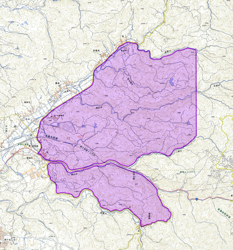

開催地
インカレミドル・リレー2020の開催されるテレインの概要と、開催に伴う立入禁止区域、旧地図のご案内です。
本大会への参加を予定している者（チームオフィシャル※1、併設大会参加者※2含む）および観戦を予定している者は、要項1発行日から本大会終了までの期間、 下図に示す区域へのオリエンテーリング目的（テレイン視察含む）での立入を禁止します（当該区域使用下でのモデルイベント時、競技参加時を除く）。 なお、近鉄大阪線および立入禁止区域周辺道路の利用は妨げません。
※1 本大会参加校は、チームオフィシャルとして選手のサポートを行う者を登録することができます。チームオフィシャルについての詳細は、後日発行される要項2をご覧ください。
※2 本大会には日本学生オリエンテーリング連盟の加盟員のみ出場可能ですが、一般の方を対象とした併設大会を開催する予定です。詳細は後日発行される併設大会要項をご覧ください。
立ち入り禁止区域 ミドル・ディスタンス、リレー競技部門共通
下記地図の薄紫色部分への、オリエンテーリング目的（テレイン視察含む）での立入を禁止します。
（クリックすると拡大図をご覧いただけます。）
クローズテレイン
- 「青山高原」：2011年 京都大学・京都女子大学オリエンテーリングクラブ作成
- 「奥鹿野」 ：2004年 2003年度日本学生オリエンテーリング選手権大会実行委員会作成